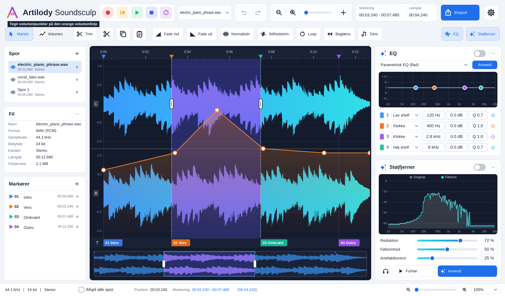

Artilody Soundsculp
Brugermanual – dansk
Version 1.0.0
Artilody Soundsculp er en enkel lydredigerings-app. Du kan åbne flere lydfiler på én gang (hver fil bliver et spor), oprette tomme spor, klippe og kopiere lyd mellem sporene, rette lyden med effekter og til sidst eksportere et enkelt spor eller alle spor mixet sammen til én fil.
Programmet kan bl.a.: markere med musen, trimme, klippe/kopiere/indsætte, fade ind og ud, normalisere, fjerne stilhed, loope, vende lyd baglæns, hæve og sænke tonen uden at ændre hastigheden, bruge en parametrisk EQ og en støjfjerner, tegne en volumenlinje på hvert spor, sætte tekstmarkører, optage fra mikrofon og eksportere til WAV, FLAC, MP3, OGG, AIFF, M4A og Opus.
Alle ændringer kan fortrydes. Den originale fil ændres aldrig – resultatet gemmes først, når du eksporterer.
Hent installationsfilen fra siden Releases på
github.com/shenphenchoedron-hue/Artilody-Soundsculp.
ArtilodySoundsculp-1.0.0-Windows-Setup.exe.Der findes også en Portable-zip, som kan pakkes ud og køres uden installation.
ArtilodySoundsculp-1.0.0-macOS-Universal.dmg og åbn den.xattr -cr "/Applications/Artilody Soundsculp.app"Hent den .deb-fil der passer til dit system (debian-12 eller ubuntu-22.04-24.04). Installér med:
sudo apt install ./artilody-soundsculp_1.0.0_debian-12_amd64.deb
Programmet findes derefter i programmenuen under Lyd og video, eller startes med kommandoen artilody-soundsculp.
Pakken anbefaler ffmpeg, som bruges til MP3-, M4A- og Opus-eksport. Installeres det ikke automatisk: sudo apt install ffmpeg.
Afinstallér med sudo apt remove artilody-soundsculp.

| Område | Beskrivelse |
|---|---|
| Topbjælken | Logo, transportknapper (optag, til start, afspil, stop, loop), valg af spor, fortryd/gentag, zoom, + (spor-menu), visning af markering og længde, Eksport og indstillinger (tandhjul). |
| Værktøjslinjen | Markér, Volumen, Trim, Klip, Kopiér, Indsæt, Fade ind, Fade ud, Normalisér, Stilhedstrim, Loop, Baglæns, Tone. Til højre: knapper der viser/skjuler EQ og Støjfjerner. |
| Spor (venstre) | Alle åbne spor. Klik for at vælge, × lukker sporet, + åbner spor-menuen. En stjerne (*) betyder ikke-eksporterede ændringer. |
| Fil (venstre) | Navn, format, samplerate, bitdybde, kanaler, længde og filstørrelse for det valgte spor. |
| Markører (venstre) | Listen over tekstmarkører. Her skriver du teksten til hver markør. |
| Bølgeformen (midten) | Tidslinje øverst, kanalerne (L/R), den orange volumenlinje og nederst markørlinjen. Under den ligger oversigten over hele sporet. |
| EQ og Støjfjerner (højre) | Parametrisk EQ med 4 bånd og støjfjerner med spektrumvisning. |
| Statuslinjen | Format, Afspil alle spor, position, markering, beskeder og zoom. |
Klik + (i topbjælken eller i Spor-panelet) og vælg Åbn lydfiler… (Ctrl+O). Du kan vælge flere filer på én gang. Du kan også trække filer direkte ind i vinduet. Hver fil åbnes som et nyt spor.
Understøttede formater: WAV, AIFF, FLAC, OGG, MP3 – og med ffmpeg også M4A/AAC, Opus, WMA m.fl.
Vælg + → Nyt tomt spor (Ctrl+N). Et tomt spor viser 30 sekunder, så du kan klikke en position. Derefter kan du:
Klikker du efter lydens slutning, fyldes mellemrummet automatisk med stilhed. Har sporene forskellig samplerate eller antal kanaler, tilpasses lyden automatisk.
Vælg + → Flet spor til ét spor…. Sæt flueben ved de spor, der skal med, og tryk Flet. Sporene mixes sammen (alle starter ved 0:00) til et nyt spor kaldet "Flettet spor". Volumenlinjerne medregnes, og markørerne kopieres med. Bliver mixet for højt, sænkes niveauet automatisk, så det ikke forvrænger. Vælg evt. Luk de flettede spor bagefter.
Spor-menuen har også Duplikér spor, Omdøb spor… og Luk spor.
Start, slut og længde vises i topbjælken og statuslinjen.
De fleste effekter virker på markeringen. Er intet markeret, virker de på hele sporet.
| Knap | Funktion |
|---|---|
| Trim (Ctrl+T) | Beholder kun markeringen og fjerner resten. |
| Klip (Ctrl+X) | Fjerner markeringen og lægger den i udklipsholderen. |
| Kopiér (Ctrl+C) | Kopierer markeringen til udklipsholderen. |
| Indsæt (Ctrl+V) | Indsætter ved positionen, eller erstatter markeringen. Virker også mellem spor. |
| Delete | Sletter markeringen. |
| Fade ind / Fade ud | Lyden glider blødt ind/ud over markeringen. Uden markering bruges de første/sidste 3 sekunder. |
| Normalisér | Hæver (eller sænker) lyden, så det højeste punkt ligger på −0,1 dB. |
| Stilhedstrim | Fjerner stilhed i starten og slutningen. Du angiver tærsklen i dB (standard −50 dB). |
| Loop | Gentager markeringen et valgt antal gange (med små overgange, så der ikke klikker). |
| Baglæns | Vender markeringen baglæns. |
| Tone | Hæver eller sænker tonen uden at ændre hastigheden (se afsnit 7). |
Klik Tone. Vælg mellem −12 og +12 halvtoner (i trin af 0,1). Knapperne −12, −1, +1, +12 giver hurtige valg. Tryk Forhør for at lytte (op til 10 sekunder), og Anvend for at gemme ændringen. Længden og tempoet bevares.
EQ-panelet har 4 bånd. Hvert bånd har en type (Lav shelf, Klokke, Høj shelf, Lav-cut, Høj-cut, Notch), frekvens, forstærkning (dB), Q (bredde) og en tænd/sluk-knap.
Støjfjerneren dæmper konstant baggrundsstøj (sus, brum, ventilator).
Hvert spor har en orange volumenlinje, som styrer lydstyrken undervejs uden at ændre selve lyden. Den bruges ved afspilning, fletning og eksport.
Markører viser fx hvor et vers eller omkvæd starter.
| Knap | Funktion |
|---|---|
| ● Optag (R) | Starter en optagelse på et nyt spor. Knappen lyser rødt, mens der optages. Tryk igen eller på Stop for at afslutte. |
| |◀ Til start (Home) | Flytter positionen til starten. |
| ▶ Afspil (Mellemrum) | Afspiller fra positionen eller markeringens start. Knappen lyser grønt under afspilning. |
| ■ Stop | Stopper afspilning eller optagelse. |
| ⟳ Loop (L) | Gentager markeringen (eller hele sporet) igen og igen under afspilning. |
Afspil alle spor nederst afspiller alle spor mixet sammen. Lydenhed (mikrofon og højttaler) vælges under Indstillinger → Lydindstillinger….
Klik Eksport (Ctrl+E) og vælg hvad der skal eksporteres:
Vælg derefter format og filnavn. Volumenlinjen medregnes altid.
| Format | Bemærkning |
|---|---|
| WAV 16 / 24 / 32-bit float | Ukomprimeret, bedste kvalitet. |
| AIFF 24-bit | Ukomprimeret (populært på Mac). |
| FLAC 16 / 24-bit | Tabsfri komprimering. |
| OGG Vorbis 192 kbps | Komprimeret. |
| MP3 320 / 192 kbps | Komprimeret – kræver ffmpeg*. |
| M4A / AAC 256 kbps, Apple Lossless | Kræver ffmpeg*. |
| Opus 160 kbps | Kræver ffmpeg*. |
* ffmpeg følger med installationen på Windows og macOS. På Linux installeres det med sudo apt install ffmpeg.
| Tast | Funktion | Tast | Funktion |
|---|---|---|---|
| Mellemrum | Afspil / stop | Ctrl+X/C/V | Klip / kopiér / indsæt |
| R | Optag | Delete | Slet markering |
| Home | Til start | Ctrl+T | Trim |
| L | Loop til/fra | Ctrl+Z / Ctrl+Y | Fortryd / gentag |
| M | Ny markør | Ctrl+O | Åbn filer |
| Ctrl+A | Markér alt | Ctrl+N | Nyt tomt spor |
| + / − / 0 | Zoom ind / ud / hele sporet | Ctrl+E | Eksport |
På Mac bruges Cmd i stedet for Ctrl.
sudo apt install ffmpeg, macOS: brew install ffmpeg).xattr -cr "/Applications/Artilody Soundsculp.app" i Terminal.Fejl og ønsker kan meldes på GitHub under Issues. Artilody Soundsculp er fri software under GPL-3.0 og er bygget med JUCE.